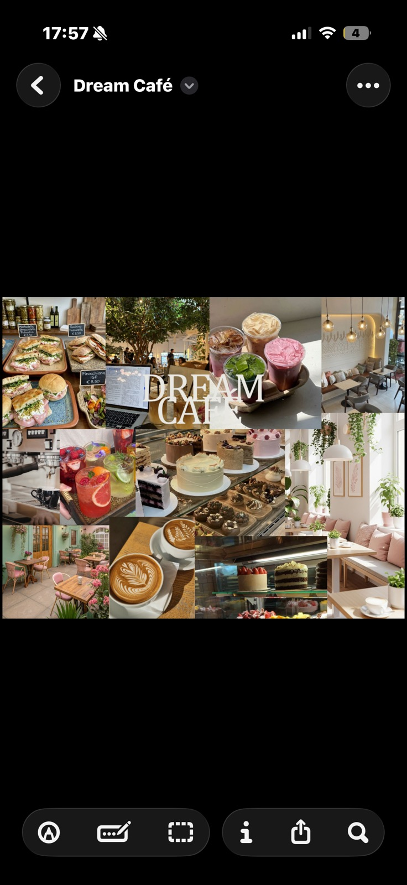

Information
Dream Café is a small collection of spaces built around light, plants, and careful craft. We serve specialty coffee, house-made lemonades and iced teas, pastries, and a concise savory menu for lunch or a light bite.
- Hours Daily 8:00 — 20:00
- Reservations Walk-in welcome; groups of 6+ by request
- Dietary Vegetarian options; please ask staff for allergens
Locations
Four houses — two in Sofia and two in Greece. Tap a pin for the address.
Dream Café — Vitosha
12 Vitosha Boulevard
1000 Sofia
Dream Café — Lozenets
4 Lozenets Street
1421 Sofia
Dream Café — Kolonaki
8 Tsakalof Street
106 73 Athens
Dream Café — Ladadika
3 Katouni Street
546 25 Thessaloniki
About us
Dream Café was founded by Ivana Pencheva as a place where precision meets warmth — the same care in a cup of espresso as in the room you drink it in.
Ivana trained in specialty coffee and pastry before opening the first Dream Café in Sofia. Today the brand grows slowly, one space at a time, always with the same brief: soft light, honest ingredients, and calm service.
“We don’t rush the pour — or the afternoon.” — Ivana Pencheva, founder